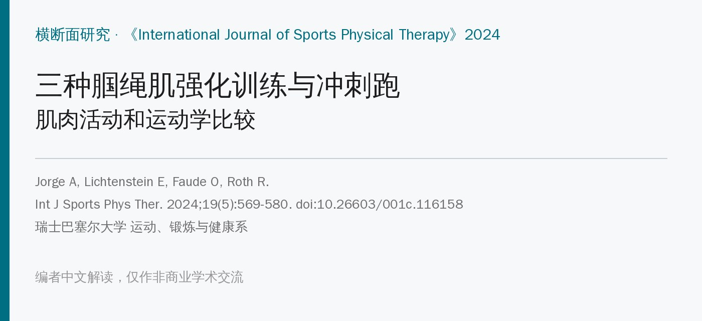
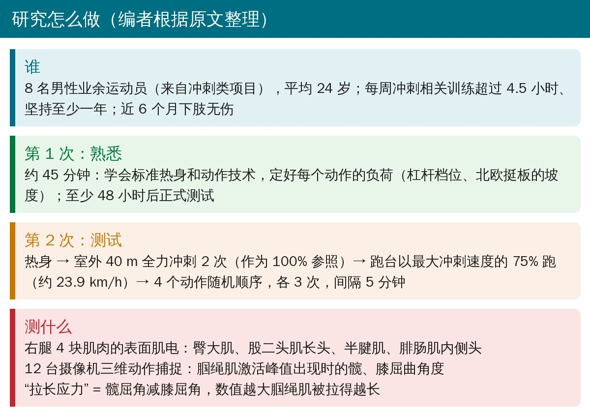
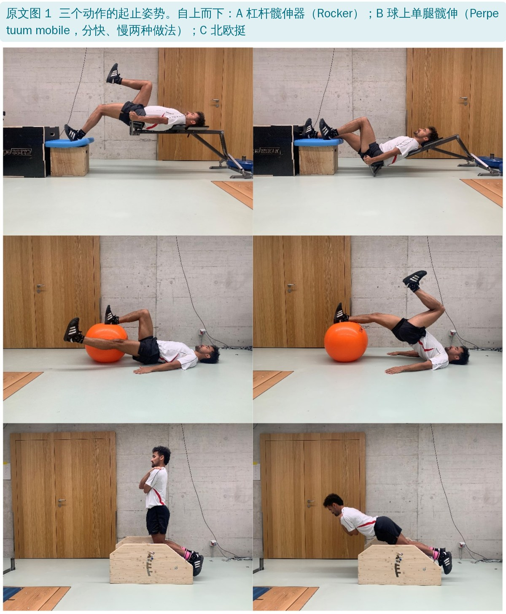
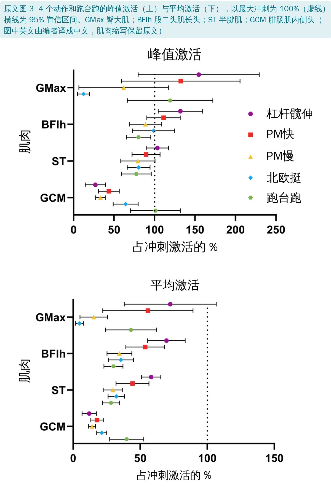
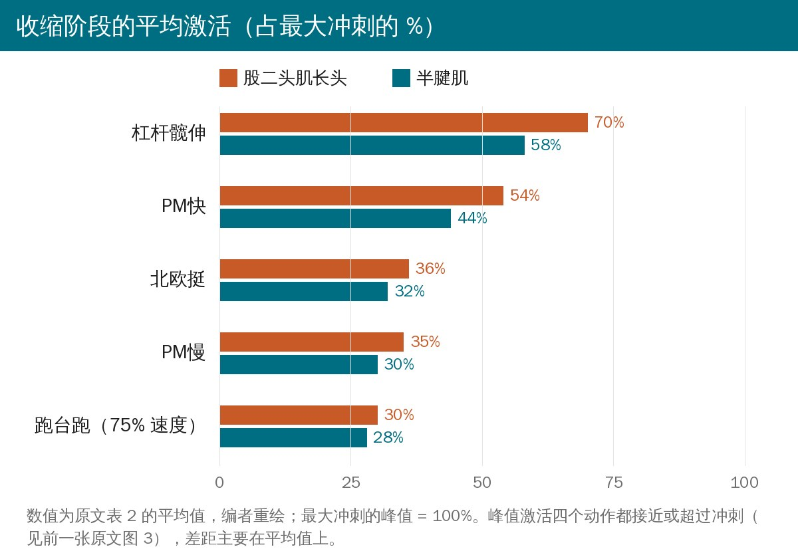
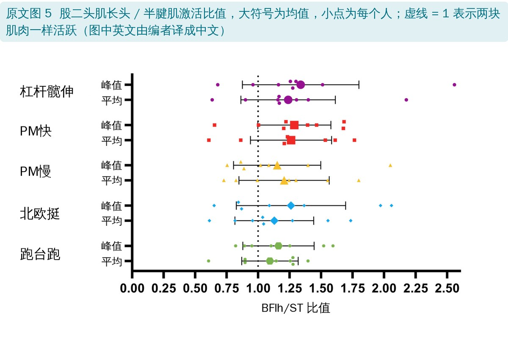
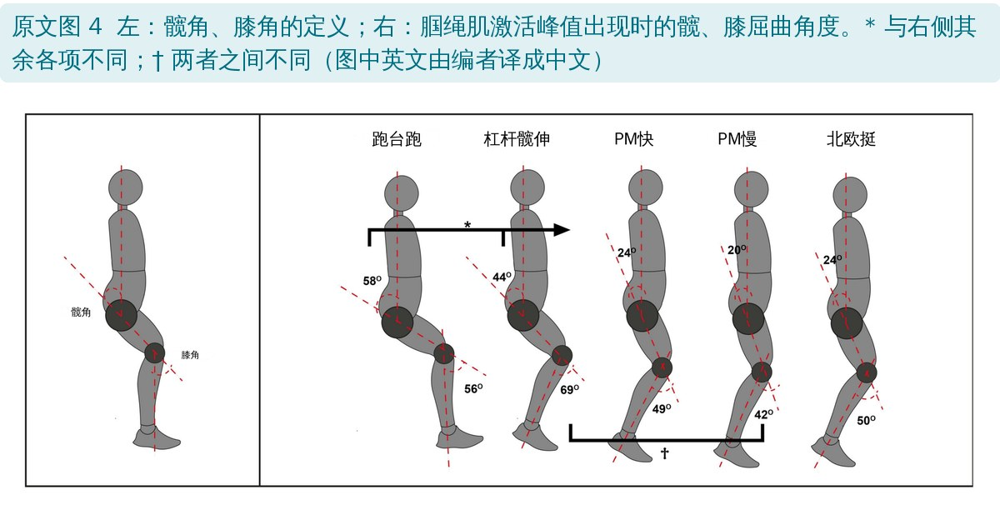
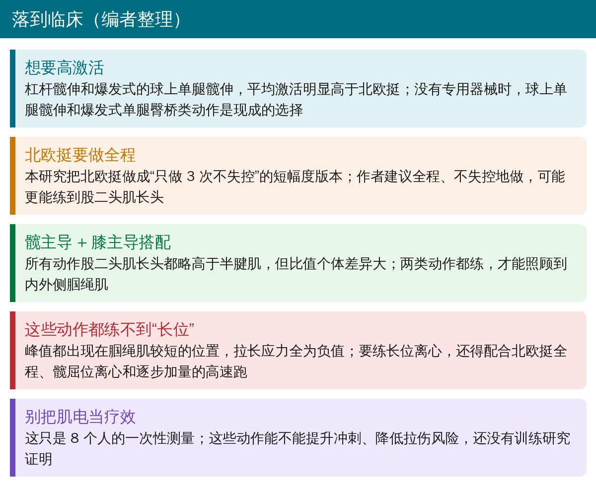

🔖原文信息（编者中文重排）
📚 文献信息
▪ Jorge A, Lichtenstein E, Faude O, Roth R. Muscle Activity and Kinematics During Three Hamstring Strengthening Exercises Compared to Sprinting: A Cross-Sectional Study. Int J Sports Phys Ther. 2024;19(5):569-580. doi:10.26603/001c.116158
▪ 中文题目：三种腘绳肌强化训练与冲刺跑的肌肉活动和运动学比较：一项横断面研究
▪ 作者单位：瑞士巴塞尔大学运动、锻炼与健康系
▪ 研究类型：实验室横断面研究（同一批人做冲刺和全部动作，原文标 3b 级证据）
腘绳肌拉伤多发生在接近最高速度的冲刺中，约 70% 伤在股二头肌长头，最危险的时刻是摆动末期：腘绳肌被拉到最长、又要用力刹住往前甩的小腿。
北欧挺能把腘绳肌拉伤减少约一半，是预防方案的标配。但它有两个常被提到的短板：一是以膝为主，多数研究里练得更多的是半腱肌而不是最常伤的股二头肌长头；二是姿势和冲刺差得远，力量能不能转到冲刺上存疑。
功能磁共振研究提示，以伸髋为主的动作可能更多动用股二头肌长头。这篇就挑了两个以髋为主的闭链动作，和北欧挺放在一起，以最大冲刺的肌电为 100%，看谁的激活和关节角度更像冲刺。
作者的三个假设：
• 以髋为主的动作，股二头肌长头激活比以膝为主的北欧挺高
• 股二头肌长头 / 半腱肌的激活比值会随“髋主导还是膝主导”而不同
• 所有动作对腘绳肌的拉长程度都比高速跑小

• 8 名男性业余运动员，平均 24.0 岁，身高 1.79 m，最大冲刺速度 31.9 km/h；2022 年 12 月至 2023 年 9 月方便抽样招募
• 测试日先在室外跑道做 2 次 40 m 全力冲刺，取肌电较大的一次作为 100% 参照
• “高速跑”是在电动跑台上以最大冲刺速度的 75%（约 23.9 km/h）跑，同时做三维动作捕捉；作者引用文献认为这是 15 步内不走形的最快速度
• 4 个动作随机顺序，各做 3 次，每次间隔 5 分钟；做完用 Borg CR10 量表确认恢复后再做下一个
• 统计用线性混合模型（每人一个随机截距），效应量按跑台跑的标准差标准化

瑞士国家级田径运动员在用的自制器械。髋部固定在器械上，右脚踩在 42 cm 高、铺了平衡垫的台子上，单腿伸髋把身体和器械一起顶起来，要求“尽量高、尽量爆发”。它是一个二类杠杆，支点越往头侧阻力越大；熟悉课里给每人定到“连做 3 次速度不明显下降、不走形”的最大档位。
来自物理治疗（Klein-Vogelbach 体系），原本用来练步态里的髋稳定和推进。仰卧，右小腿搭在 53 cm 的瑜伽球上，髋和左腿离地，双臂撑地。起始时球拉到靠近臀部，伸髋把球往脚的方向滚出去，同时左腿屈髋屈膝，模仿跑步的摆动腿。分两种做法：PM快（向心阶段爆发式）和 PM慢（每个阶段 5 秒，节拍器控制）。
跪在可调坡度的板上，脚踝固定，双手抱胸，保持伸髋向前倒，只做下放（离心），5 秒落地。坡度按“刚好能做 3 次全程不失控”来调，所以每个人北欧挺的难度不同。

峰值激活上，四个动作的腘绳肌大多接近或超过最大冲刺；杠杆髋伸的股二头肌长头达到冲刺的 132%。差距主要在平均激活上：

• 杠杆髋伸最高：平均激活明显高于其他所有动作，峰值激活高于 PM慢、北欧挺和跑台跑
• PM快其次：高于 PM慢、北欧挺和跑台跑
• 北欧挺和 PM慢与跑台跑相当，平均只有冲刺的三成多；北欧挺是“峰值高、平均低”
• 臀大肌：杠杆髋伸、PM快和跑台跑的峰值都明显高于北欧挺；臀大肌个体差异很大（置信区间很宽）
• 腓肠肌：所有动作都明显低于跑台跑
表 2 腘绳肌肌电（以最大冲刺为 1，均值及 95% 置信区间，编者翻译）
| 动作 | 峰值 股二头肌长头 | 峰值 半腱肌 | 平均 股二头肌长头 | 平均 半腱肌 |
|---|---|---|---|---|
| 杠杆髋伸 | 1.32（1.05～1.59）* | 1.04（0.90～1.17） | 0.70（0.56～0.84） | 0.58（0.51～0.65） |
| PM快 | 1.11（0.91～1.32） | 0.90（0.72～1.07） | 0.54（0.39～0.68） | 0.44（0.32～0.57） |
| PM慢 | 0.89（0.69～1.09） | 0.80（0.58～1.01） | 0.35（0.25～0.44） | 0.30（0.22～0.37） |
| 北欧挺 | 0.99（0.72～1.26） | 0.79（0.65～0.94）* | 0.36（0.26～0.45） | 0.32（0.26～0.39） |
| 跑台跑 | 0.80（0.65～0.95）* | 0.78（0.59～0.96）* | 0.30（0.23～0.37） | 0.28（0.22～0.35） |
* 峰值与最大冲刺有统计学差异
作者的解释：杠杆髋伸有额外负荷；爆发式动作向心阶段短，平均值接近峰值，慢动作收缩时间长、起伏大，平均值就被拉低；北欧挺开头那段负荷很小，也拉低了平均值。

• 所有动作合起来看，股二头肌长头都比半腱肌更活跃：峰值高 0.16（95% CI 0.07～0.26），平均高 0.06（0.01～0.11）
• 但比值在各动作之间没有差异，北欧挺的均值也大于 1。也就是说，“髋主导练股二头肌、膝主导练半腱肌”在这里没有得到证实
• 个体差异很大：同一个动作，有人比值 0.6，有人超过 2
北欧挺这次也偏向股二头肌，和多数研究不同。作者认为和做法有关：坡度调到“3 次不失控”，起始膝屈平均只有 81.5°，幅度短、没有“撑不住的断点”。有研究发现半腱肌在北欧挺前段更活跃、越接近伸直股二头肌占比越高，所以作者建议北欧挺要全程、不失控地做。

表 3 腘绳肌激活峰值时的髋、膝屈曲角度和拉长应力（°，均值及 95% 置信区间，编者翻译）
| 动作 | 髋屈角 | 膝屈角 | 拉长应力 |
|---|---|---|---|
| 杠杆髋伸 | 44（35～52）* | 69（59～79）† | −25（−35～−16） |
| PM快 | 24（8～40） | 49（34～65） | −25（−29～−22） |
| PM慢 | 20（4～37） | 42（23～61）† | −22（−26～−18） |
| 北欧挺 | 24（20～29） | 50（39～61） | −26（−34～−18） |
| 跑台跑 | 58（52～65）*** | 56（45～66） | 3（−3～9）*** |
拉长应力 = 髋屈角减膝屈角，越大说明腘绳肌越被拉长。* 与其余不同；† 两者之间不同（p < 0.05）
• 跑台跑的髋屈最大（58°），其次是杠杆髋伸（44°），其余三个动作只有 20°～24°
• 膝角只有杠杆髋伸和 PM慢之间有差异（差 27°）
• 拉长应力：所有动作都是负值（约 −25），明显小于跑台跑，也就是说峰值都出现在腘绳肌比较短的位置
• 作者认为 PM快和北欧挺的髋、膝角度组合和高速跑的摆动末期相近；杠杆髋伸峰值出现在动作初段、膝屈偏多，把起始膝角放得更直可能更好
• 闭链、以髋为主的爆发式动作值得重视：前人研究的仰卧踢腿（爆发式单腿臀桥）没加负荷，也是激活最高的动作之一，和本研究方向一致
• 臀大肌差异大：动作对多数人是新的，可能各用各的发力策略；伸髋可以靠臀大肌，也可以少用臀大肌
• 75% 速度的跑台跑激活偏低：另一项研究同样 75% 速度时腘绳肌激活就超过最大用力的动作，本研究没有重复出来。作者推测速度超过约 26 km/h 后腘绳肌负荷会成倍增加，75% 速度可能并不能代表最大冲刺
• 从拉长角度看，这几个动作（包括北欧挺）都不利于降低拉伤风险：预防需要把腘绳肌拉过最适长度、促使肌束变长，而这几个动作峰值都在短位；纯向心训练甚至可能让肌纤维变短
• 作者自认的局限：单通道表面肌电只代表肌肉一小块区域，还有串扰；肌电不等于肌力；为统一强度给每人调负荷，反而可能增加了角度和激活的变异
• 样本只有 8 人：全是年轻男性业余运动员，置信区间很宽（臀大肌尤其明显）；作者报告“事后功效 > 0.92”，但事后功效本身说明不了什么，8 个人能检出的只是很大的差异
• “冲刺”参照有两套：100% 用的是室外 40 m 全力冲刺，运动学却只在跑台 75% 速度下测，最大冲刺时的角度和拉长应力其实没测到，作者自己也说 75% 速度可能不够代表
• 负荷各不相同：杠杆档位、北欧挺坡度都按个人调，PM 没有外加负荷，比较的其实是“各自那套做法”，不是动作本身
• 熟练度不一：杠杆髋伸和 PM 对多数人是新动作，只熟悉了一次
• 肌电高 ≠ 训练效果好：作者在“实际应用”里也承认，目前没有证据表明这些动作能带来冲刺专项的适应或降低拉伤风险；可同一段又说这些动作“可以用到很早的治疗阶段”，本研究没有任何患者数据支持这一点
• 优点：同一批人同时测肌电和三维运动学，把“激活多高”和“在什么角度激活”放在一起看；拉长应力这个简单指标对选动作很有提醒意义
• 体重：摘要写 76.8 ± 7.7 kg，表 1 写 76.3 ± 7.7 kg
• 北欧挺峰值髋角：讨论写 26°（95% CI 18.8°～33.3°），表 3 和图 4 都是 24°（20～29）
• “三个髋主导动作”到底是哪三个：引言说研究“两个髋主导动作”再加北欧挺；摘要和研究目的写“比较三个髋主导动作：杠杆髋伸、PM快和 PM慢、北欧挺”，把以膝为主的北欧挺也算了进去，而假设 1 又明确把北欧挺称为膝主导动作；讨论里“三个髋主导动作中有两个的股二头肌激活高于北欧挺”，又是把 PM快、PM慢算成两个
• 臀大肌“高于冲刺”：摘要说杠杆髋伸和 PM快的臀大肌激活高于冲刺，但结果部分没有报告和冲刺的比较；图 3 里这两个动作峰值的置信区间下限约 80% 和 58%，都跨过 100%，平均激活则全部低于冲刺。摘要说杠杆髋伸“臀大肌最高”，结果里它和 PM快、跑台跑之间也没有差异
• 训练量和纳入标准：纳入要求每周冲刺相关训练超过 4.5 小时，表 1 却是 5.0 ± 1.8 小时。8 个人如果都不少于 4.5 小时、均值 5.0，标准差最多约 1.4，所以至少有人目前每周不到 4.5 小时（除非标准指的是过去某一年）
• 慢动作的平均激活范围：讨论说北欧挺平均激活为冲刺的 26%～40%、PM慢 25%～39%，和表 2 对不上（北欧挺均值 32%～36%、置信区间 26%～45%；PM慢均值 30%～35%、置信区间 22%～44%）
• 占位符没删：讨论第一段“峰值都出现在腘绳肌较短的位置（range）”，括号里的 range 应该是要填具体范围
• 测了几块肌肉：研究设计一段说测的是股二头肌和半腱肌，实际测了 4 块（还有臀大肌和腓肠肌）
• 笔误：图 3 图注写“peak (1A) und average (1B)”，und 是德语、面板号也写错了；同一图注把腓肠肌内侧头写成“gastrocnemius medius”（方法里是 medialis）；表 1“Verlocity”应为 Velocity
• 许可声明自相矛盾：文末写“Creative Commons Attribution 4.0 International License（CCBY-NC-4.0）”，前者是 CC BY 4.0，括号和链接却是 CC BY-NC 4.0（非商业），两者不是同一个协议，本文按更严格的 CC BY-NC 4.0 处理

🔖临床要点（编者整理）
• 想要高激活：杠杆髋伸、爆发式球上单腿髋伸的平均激活明显高于北欧挺，可以作为北欧挺之外的补充；没有器械时，爆发式单腿臀桥类动作是现成的替代
• 北欧挺尽量全程做：短幅度、坡度调低的北欧挺更像“峰值高、平均低”，全程不失控可能更能练到股二头肌长头
• 髋主导和膝主导搭配：“髋主导专练股二头肌”在本研究没有得到证实，比值个体差异大，两类都练更稳妥
• 别忘了长位：这些动作峰值都在腘绳肌短位，想练长位离心，还要配合全程北欧挺、髋屈位的离心动作和逐步加量的高速跑（编者补充）
• 这是 8 个人的一次性肌电测量，不是训练研究；把杠杆髋伸、PM 当作“预防拉伤动作”之前，还需要训练和损伤数据
欢迎关注骨科康复小黄公众号，获取更多物理治疗的专业知识！
📄参考文献：
Jorge A, Lichtenstein E, Faude O, Roth R. Muscle Activity and Kinematics During Three Hamstring Strengthening Exercises Compared to Sprinting: A Cross-Sectional Study. Int J Sports Phys Ther. 2024;19(5):569-580. doi:10.26603/001c.116158
原文 © The Author(s)，按知识共享署名—非商业性使用 4.0 国际协议（CC BY-NC 4.0，https://creativecommons.org/licenses/by-nc/4.0）开放获取（原文声明同时写了“CC BY 4.0”的名称，此处按更严格的非商业协议处理）。本文为非商业学术交流用的中文解读，对原文作了改编：照片引自原文图 1（编者加中文图注）；原文图 3～5 中的英文由编者译成中文覆盖原位置（肌肉缩写保留原文）；表格为编者翻译；首图、研究流程卡、平均激活重绘图和临床要点卡为编者根据原文整理。仅供学习交流，如有侵权请联系删除。